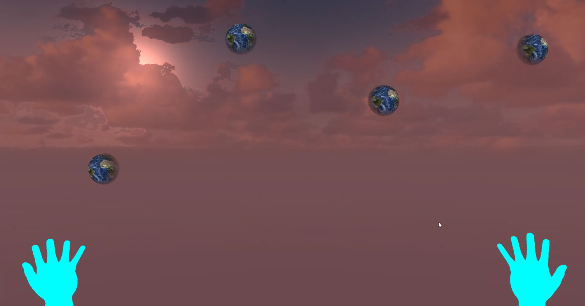

Brian Egana
CPE 471 - Spring 2018
The weight of the world is in your hands! In this short game, the player must juggle multiple Earths until the day is over. If the player drops just one planet, the player must try again another day. A special message appears for those who are worthy.
The project source code can be found on Bitbucket.
The project base code was provided by Christian Eckhardt.
Simple Physics:
http://nehe.gamedev.net/tutorial/introduction_to_physical_simulations/18005/
Collision Detection and Resolution:
https://learnopengl.com/In-Practice/2D-Game/Collisions/Collision-detection
https://www.gamasutra.com/view/feature/131424/pool_hall_lessons_fast_accurate_.php